程序升级
Table of Contents
1 概括
ePDU-HMI 升级包括工程配置文件升级，系统参数文件升级和运行程序升级。可以使用U盘升级，U盘导出旧配置及在U口不好用的情况如何用网口进行升级及备份，最后介绍了怎样简单的检测配置是否升级成功及简单测试
本文文件只是针对于交流ePDU-HMI设备
2 配置软件配置
2.1 说明书
2.2 标准化部件
2.2.1 线的颜色
棕色
2.2.2 开关颜色
绿色
2.2.3 三相颜色
A相电流或功率设置为黄色 B相电流或功率设置为绿色 C相电流或功率设置为红色
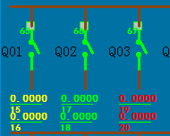
2.2.4 三相开关
三相开关均改为以下形式，根据实际要求，可以关联三个不同的遥信支路或者相同遥信支路
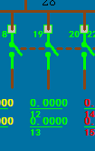
2.2.5 一行中图元列数
每行数据列数最多为12列
2.4 配置项
2.4.1 模块
- 图纸地址 配置的模块地址要与图纸地址保持一致
2.4.2 名称
名称都需要按照图纸进行配置,具体包括以下所有项
- 进线
- 遥测
- 遥信
2.5 检查
2.5.1 检查
- 限制
一张图中每种模块类型的数量不能超过128个。
如一张图中进线的开关数量不得超过128个，进线的测量数量不得超过128个
- 对齐
检查图元与图元之间对齐
- 可通过调整图元的大小进行对齐
- 通过设置作标实现对齐或移动
- 关联
- 快速检查和修改关联
通过系统图和new文件夹下的sysUI-A.txt 进行比较
- 进线
地址/关联支路
- 遥信
地址/关联支路
- 遥测
单位 地址/关联支路
序号 单位 条件 1 kV/V /100 2 kV/V /100 3 kV/V /100 4 kV/V /100 5 kV/V /100 6 kV/V /100 7 kV/V /100 8 A /1000 9 A /1000 10 A /1000 11 A /1000 12 kHz/Hz /100 13 /1000 14 /1000 15 /1000 16 /1000 17 KW /1000 18 KW /1000 19 KW /1000 20 KW /1000 21 Kvar /1000 22 Kvar /1000 23 Kvar /1000 24 Kvar /1000 25 KVA /1000 26 KVA /1000 27 KVA /1000 28 KVA /1000 29 ℃ /10 30 ℃ /10 31 ℃ /10 32 kWh /10 33 kWh /10 34 kWh /10 35 kWh /10 36 kWh /10 37 kWh /10 38 kWh /10 39 kWh /10 40 A /100 41 KW /100 42 kWh /10
- 进线
- 快速检查和修改关联
3 U盘升级
3.1 工程配置文件升级
关联文件夹:new 文件夹
- 将new文件夹复制到U盘的根目录下。
- 将U盘插到HMI设备上。
- 进入到ePDU-HMI显示界面的“参数设置”中的“系统操作”界面，然后点击“系统升级”操作，选择“导入工程配置文件”
- 导入之后，重启ePDU-HMI。
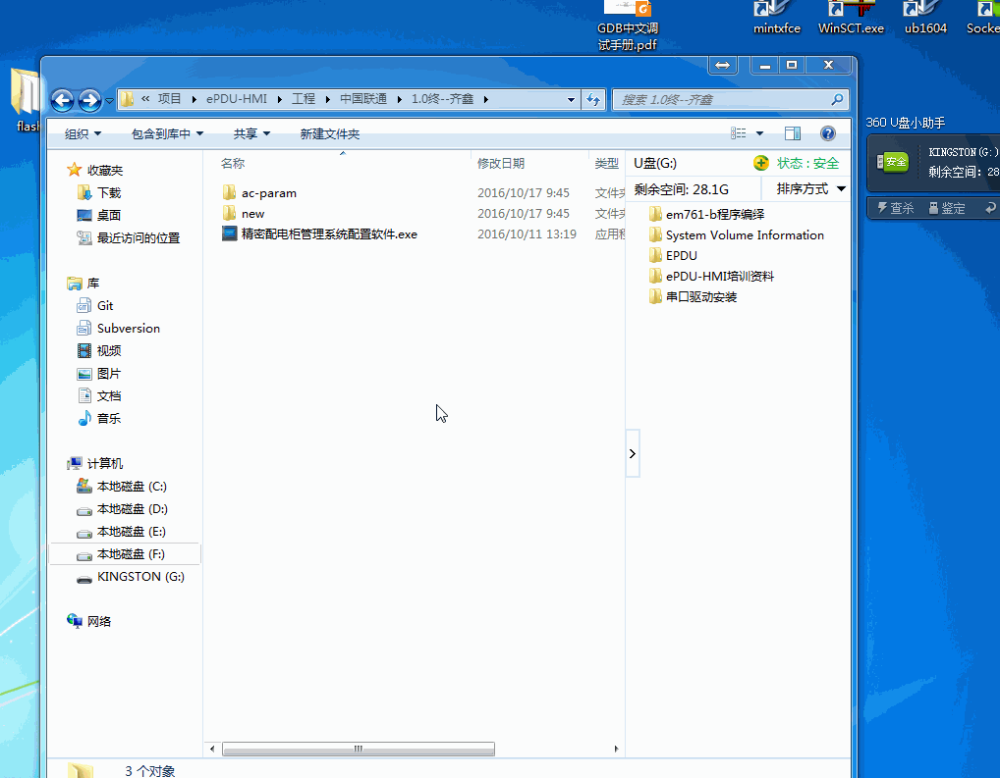
3.2 系统参数文件升级
关联文件夹:ac-param 文件夹
- 将ac-param复制到U盘的根目录下。
- 将U盘插到HMI设备上。
- 进入到ePDU-HMI显示界面的“参数设置”中的“系统操作”界面，然后点击“系统升级”操作，选择"导入系统参数文件"。
- 导入之后，重启ePDU-HMI。
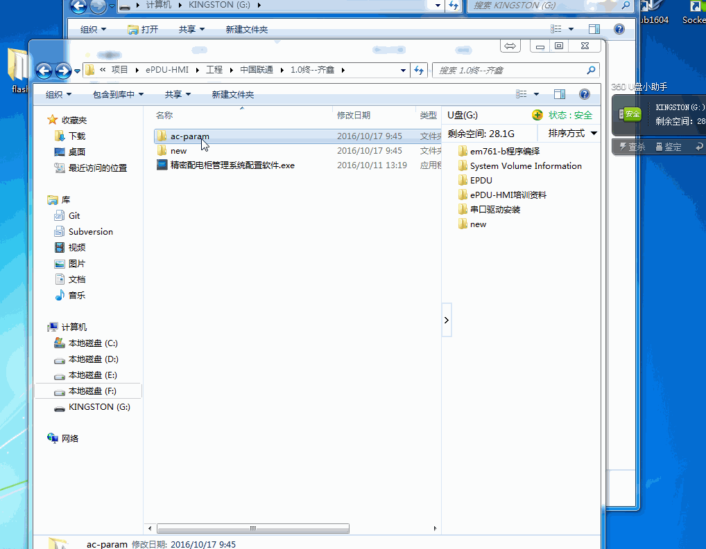
3.3 运行程序升级
关联文件:new文件夹下的HMI，hmi_gui
关联文件夹:new文件夹
- 将HMI，hmi_gui文件放入new文件夹下, new文件夹下只有这两个文件就可以进行运行程序的升级。
- 将new文件夹复制到U盘的根目录下。
- 将U盘插到HMI设备上。
- 进入到ePDU-HMI显示界面的“参数设置”中的“系统操作”界面，然后点击“系统升级”操作，选择"系统文件升级"，然后点击确定。
- 重启ePDU-HMI.
4 U盘导出旧配置
4.1 导出系统参数文件
关联文件:ac-param下的ac-dest-EQ.txt、 ac-dest-param.txt、rs485_devs-A.txt。 soe.log、 soe_back.log
- 如果U盘根目录下，已有叫ac-param的文件夹，可以删除或备份该文件夹
- 将U盘插到HMI设备上。
- 进入到ePDU-HMI显示界面的“参数设置”中的“系统操作”界面，然后点击“系统升级”操作，选择"导出参数配置文件"，然后点击确定。
- 在U盘文件夹下的ac-param文件夹下会生成导出文件 ac-dest-EQ.txt、 ac-dest-param.txt、rs485_devs-A.txt。 soe.log、 soe_back.log。
4.2 导出工程配置文件
关联文件夹:old文件夹
4.2.1 新配置升级时导出备份
- 将U盘插到HMI设备上时。
- 在U盘上放入一个新的工程配置文件（new文件夹），然后按照3.1 导入新的工程。
- 在新工程导入的同时，系统就会将现有的配置自动放入到old文件夹内，old文件夹内的工程就是我们要导出的工程。
- 查看old文件夹是否是空文件夹，如果不是空文件夹，则导出成功。
4.2.2 利用脚本导出
详请查看doc/old/old.pdf
old.sh在doc/old/文件夹下
5 利用网口进行升级及备份
部分ePDU-HMI会出现不识别U盘情况，这个时候我们可以利用网络对升级或备份配置程序。
详请查看doc/ftp/ftp.pdf
ftptousb.sh和usbtoftp.sh 及FileZilla_Server_cn-0_9_46.exe 在doc/ftp/文件夹下
6 用导出配置升级
导出配置后，会在U盘根目录下生成old文件夹和ac-param文件夹，我们需要进行一定的修改，才能再次导入ePDU-HMI中，这样的话才能用备份升级ePDU-HMI配置
6.1 修改系统参数文件
- 导出的ac-param文件夹下，会有ac-dest-EQ.txt和ac-dest-param.txt这两个文件。
- ac-src-EQ.txt和ac-src-param.txt为要导入ePDU-HMI的名称，需要将其改成ac-src-EQ.txt和ac-src-param.txt两个文件。
- 如果已经有ac-src-EQ.txt和ac-src-param.txt两个文件,可能是上次升级的文件，可以将其删除。
- 修改完毕后才可以执行3.2的系统参数文件升级。
6.2 修改工程配置文件夹名称
将old文件夹名称修改为new文件夹，这样才能进行3.1 的工程配置升级
7 配置文件介绍及新工程要删除那些配置文件
本文文件只是针对于交流设备。
7.1 工程配置文件
工程配置文件指的是new文件夹。
- new文件夹最开始是通过 精密配电柜管理系统配置软件.exe 产生的。存有模块配置，UI图标及系统图配置的内容。
- 在导出工程配置文件时产生的old文件夹，在修改为new时，在此文件夹内存在着更多的信息，除了模块配置，UI图标及系统图配置之外，还包括了ePDU-HMI上soe记录，密码，系统参数和数据。
- 同时在进行运行程序升级时，也是将运行程序放入new文件夹下。
7.1.1 cfg文件夹
cfg文件夹可以存放模块配置，UI图标，系统图配置，密码，系统参数及数据。
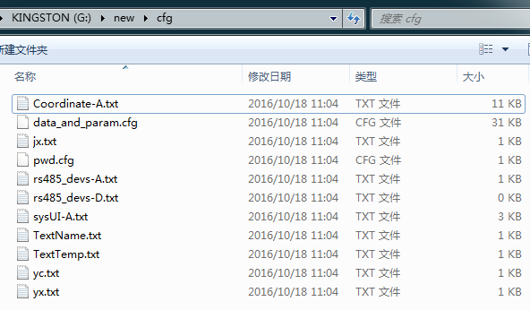
| 文件 | 描述 | 产生 | 新配置是否删除 |
|---|---|---|---|
| Coordinate-A.txt | 系统图的坐标，顔色，图元类型等信息 | 配置软件产生/导出时产生 | 否 |
| data_and_param.cfg | 二进制文件，运行的数据和参数 | 导出产生 | 是 |
| jx.txt | 进线模块的名称 | 配置软件产生/导出产生 | 否 |
| pwd.cfg | 密码 | 导出产生 | 是 |
| rs485_devs-A.txt | 模块配置信息 | 配置软件产生/导出产生 | 否 |
| rs485_devs-D.txt | 模块配置信息 | 配置软件产生/导出产生 | 否 |
| sysUI-A.txt | 图元关联信息 | 配置软件产生/导出产生 | 否 |
| TextName.txt | 文字标识的文字 | 配置软件产生/导出产生 | 否 |
| TextTemp.txt | 文字标识的文字 | 配置软件产生/导出产生 | 否 |
| yc.txt | 遥测模块的名称 | 配置软件产生/导出产生 | 否 |
| yx.txt | 遥信模块的名称 | 配置软件产生/导出产生 | 否 |
7.1.2 res文件夹
存有系统图的背景图，配置软件产生，此文件不做任何改动。
7.1.3 log文件夹
log文件夹存放soe记录，启动日志，及当前的状态信息
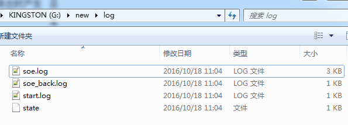
新配置删除该文件夹。
| 文件 | 描述 | 产生 | 新配置是否删除 |
|---|---|---|---|
| soe.log | 二进制文件，soe记录 | 导出产生 | 是 |
| soe_back.log | 二进制文件，soe记录 | 导出产生 | 是 |
| start.log | 启动日志 | 导出产生 | 是 |
| state | 状态信息文件 | 导出产生 | 是 |
7.1.4 升级程序
运行程序是在ePDU-HMI运行的程序，只能升级，不能导出。
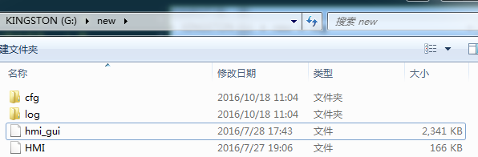
7.2 系统参数文件
系统参数文件是主要针对ePDU-HMI上的参数进行配置，在出厂的时候进行一定设置之后，就不用在ePDU-HMI上分别进行设置每一项参数。
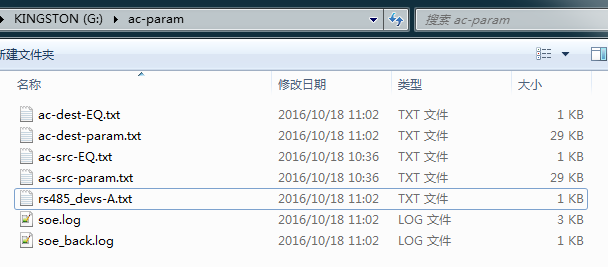
| 文件 | 描述 | 产生 | 新配置是否删除 |
|---|---|---|---|
| ac-dest-EQ.txt | 存有进线模块电量的文件 | 导出产生 | 是 |
| ac-dest-param.txt | 存有系统配置的文件 | 导出产生 | 是 |
| ac-src-EQ.txt | 存有进线模块电量的文件，导入时使用 | 导出修改名字后产生/自已手动配置 | 否 |
| ac-src-param.txt | 存有系统配置的文件 | 导出修改名字后产生/自已手动配置 | 否 |
| rs485_devs-A.txt | 模块配置信息 | 导出产生 | 是 |
| soe.log | 二进制文件，soe记录 | 导出产生 | 是 |
| soe_back.log | 二进制文件，soe记录 | 导出产生 | 是 |
上述中的ac-src-param.txt为新配置时主要配置的文本，其中可以查看注释版本的ac-src-param.txt 上面的寄存器地址为MODBUS规药的寄存器地址，可以通过查看相应的协议ePDU-HMI通信协议MODBUS（交流20140917）.pdf 来查看具体的定义，文件中的M1、M2等指的是模块。
8 检测升级
升级配置后，可以从以下几个方面查看升级。
8.1 工程配置文件升级
8.1.1 检查模块个数及通讯状态
点击系统信息，检测模块信息是否正确正确性。
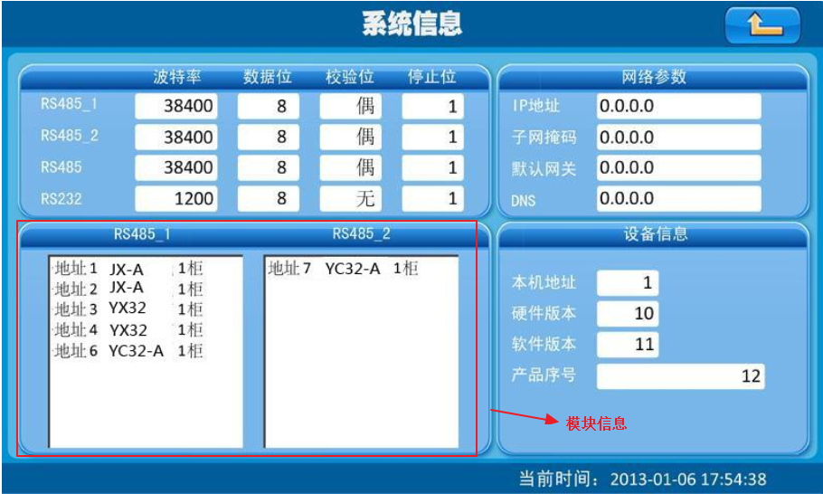
- 模块数量
- 模块种类
- 模块地址
- 模块所在串口
- 模块柜号
点击运行状态，检测通讯状态的正确性, 绿色代表通讯正常，红色代表通讯故障。
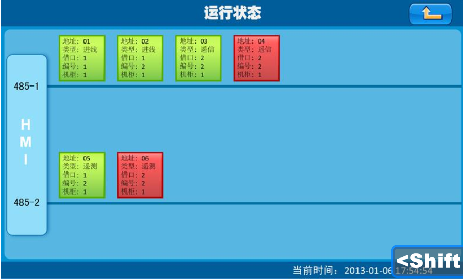
- 查看通讯状态
- 查看所在串口
8.1.2 检查系统图
点击系统图，进行系统图检测
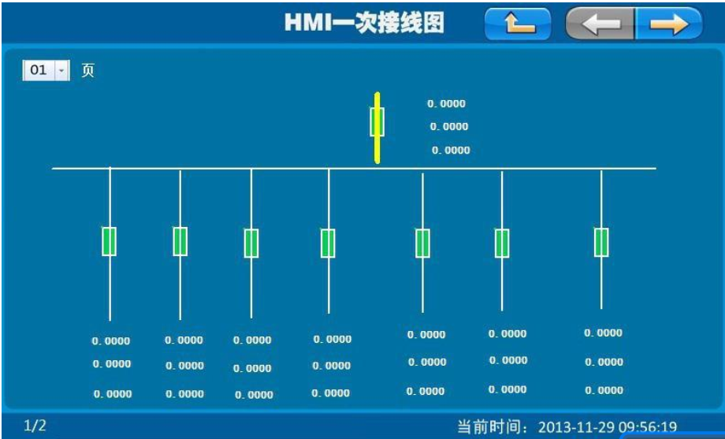
- 查看是否有系统图
- 用精密配电柜管理系统配置软件.exe打开系统图，认真比较，两个系统图是否一样
8.2 系统参数升级
8.2.1 检查模块配置参数
通过比较配置的ac-src-param.txt和ePDU-HMI上显示的参数，查看是否升级系统参数成功
ac-src-param.txt 上面的寄存器地址为MODBUS规药的寄存器地址，可以通过查看相应的协议ePDU-HMI通信协议MODBUS（交流20140917）.pdf 来查看具体的定义，文件中的M1、M2等指的是模块。
- 进线参数
变比参数
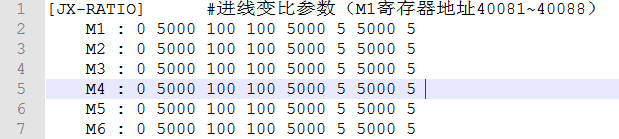
Mx为相应的第几个模块，打开ePDU-HMI通信协议MODBUS（交流20140917）.pdf 搜索40081 依次查看相应定义 进入参数设置->进线参数查看相应模块以下项,一般CT会做修改
- 额定值
- 系统接线制
- PT
- CT
- CTn
关联继电器
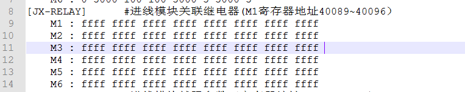
Mx为相应的第几个模块，打开ePDU-HMI通信协议MODBUS（交流20140917）.pdf 搜索40089 依次查看相应定义
进入参数设置->进线参数查看相应模块是否允许关联继电器及关联的那个继电器
- 馈线遥测
额定值
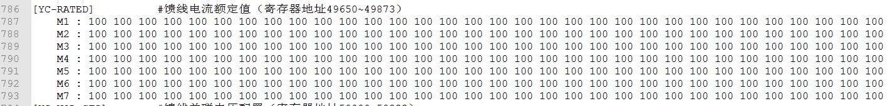
Mx为相应的第几个模块，打开ePDU-HMI通信协议MODBUS（交流20140917）.pdf 搜索49650 依次查看相应定义
进入参数设置->遥测参数查看相应模块各个支路的额定值
关联电压
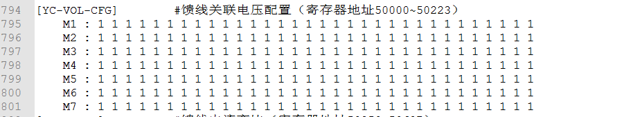
Mx为相应的第几个模块，打开ePDU-HMI通信协议MODBUS（交流20140917）.pdf 搜索50000 依次查看相应定义
进入参数设置->遥测参数查看相应模块各个支路关联进行配置
变比
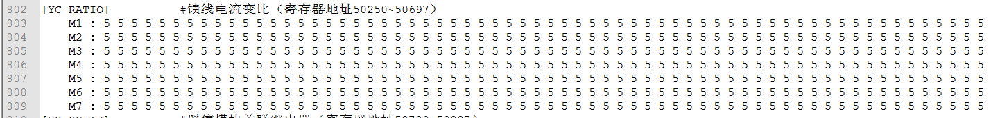
Mx为相应的第几个模块，打开ePDU-HMI通信协议MODBUS（交流20140917）.pdf 搜索50250 依次查看相应定义
进入参数设置->遥测参数查看相应模块各个支路一次侧值和二次侧值
- 馈线遥信
关联继电器
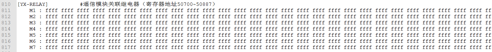
Mx为相应的第几个模块，打开ePDU-HMI通信协议MODBUS（交流20140917）.pdf 搜索50700 依次查看相应定义
进入参数设置->系统参数的第三页查看相应模块各个支路的关联继电器
8.3 运行程序升级
8.3.1 查看版本号
查看软硬件版本号是否正确。
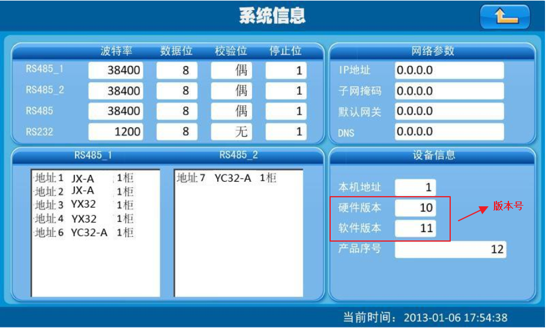
9 测试
9.1 io口测试
详细请查看 调试工艺
9.2 通讯测试
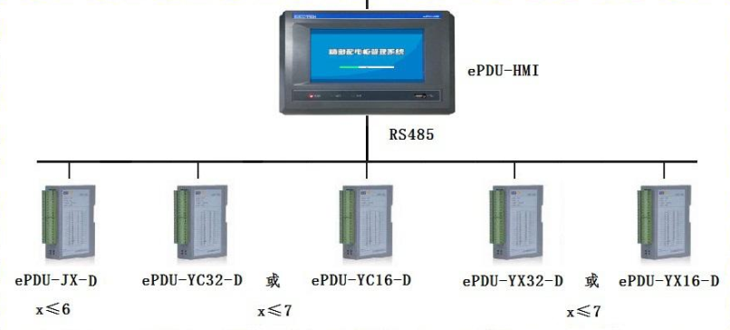
根据实际的配置搭建通讯环境。如上图所示。以下为接线时的注意事项
- 设置ePDU-HMI和模块的串品波特率，使其保持一致，默认为38400 8 偶 1。
- 根据ePDU-HMI上的配置，查看模块的型号是否正确,如果模块类型不对，是不能通讯的。
- 根据ePDU-HMI上的配置,设置相应模块的地址。注意不要有重复的地址。
- 查看ePDU-HMI上模块是在那个串口上，也将相应的模块接到那个串口上。ePDU-HMI的4、5、6端子是RS484_1,7、8、9端子是RS484_2
最后实际通讯完成以运行状态 中模块全部为绿色为准。
9.3 模块测试
模块测试主要是针对当前ePDU-HMI配置的系统图进行测试。测试系统图中的每一项内容。查看配置是否出错。具体模块的每项数据的查看可以在数据查询界面进行查看。
9.3.1 进线模块测试
主要测试的是三相电流，电压,总有功功率及第一路DI开关。
- 电流、电压、及总有功功率1数据是否正确
- 开关是否按照预想的打开闭合
- 开关的闭合时间是否小于3s
9.3.2 遥信模块测试
模块配置的所有开关量信号
- 测试系统图中每一个支路的开关信号是否按照预想的打开闭合
- 打开闭合的时间是否小于3s
9.3.3 遥测模块测试
所有支路关联的电流和功率。如果系统图中关联了电量，那么电量也需测试
- 是否有电流，功率
- 电流、功率2 的数值是否正确。